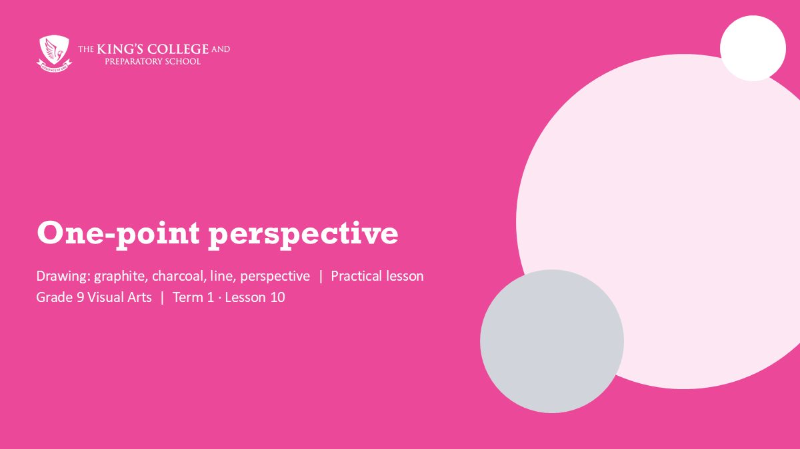

Term 1 · Lesson 10 · Practical lesson
One-point perspective 2
Start here
Today I will
- Plan a room or street in one-point perspective
- Add doors, windows and furniture that follow the vanishing point
- Show depth with size, overlapping and shading
Think first
Look down the passage outside the classroom. Which lines seem to go towards one point?
Words to know
- One-point perspective
- Lines going away from you all meet at one vanishing point.
- Depth
- The illusion of near and far on a flat surface.
- Foreshortening
- Something pointing towards you looks shorter and wider, so it looks right in depth.
- Back wall
- In a room drawing, the rectangle facing you, drawn first.
- Overlapping
- Placing one object in front of another to show depth.
Slides

Notes
A room interior or street scene in one-point perspective with doors, windows and furniture.
Drawing a room interior
- Back wall: Draw a rectangle in the middle of the page with the VP inside it.
- Corners: Join the four corners of the back wall to the VP and extend them to the edges of the page.
- Doors and windows: Verticals stay vertical; tops and bottoms go to the VP.
- Furniture: Draw a box first, then shape it into a bed, table or shelf.
Making depth convincing
- Size: Objects further back are smaller.
- Overlapping: Furniture in front hides part of what is behind it.
- Foreshortening: A table top seen from above looks shorter from front to back.
- Value: Shade the sides away from the window darker.
Remember
Box first, then turn the box into the object.
Practical
You need: Ruler, pencils, eraser, cartridge paper
One-point perspective room or street
- Choose a room interior or a street scene.
- Draw the horizon line and vanishing point lightly.
- Draw the back wall (room) or the road and building edges (street).
- Add at least one door, two windows and three pieces of furniture or street objects.
- Check every receding line with the ruler: does it go to the VP?
- Erase construction lines and add light shading to show depth.
Assessment
Assessed (Term 1 practical): one-point perspective drawing.
Test yourself
- Where do you start a room drawing?
- What happens to windows as they go further down a street?
- Name two ways besides perspective lines to show depth.
Show answers
1. With the back wall and the vanishing point inside it. 2. They get smaller and closer together. 3. Any two: overlapping, smaller size, foreshortening, darker or lighter value, less detail.
Finished early?
Add a doorway
Take your room or street scene a step further.
- On a new VJ page, draw a back wall with a VP inside and join its corners to the VP.
- Add an open door on a side wall: verticals stay vertical, tops and bottoms go to the VP.
- Add one object that overlaps another to show depth.
- Shade the sides away from the window a little darker.